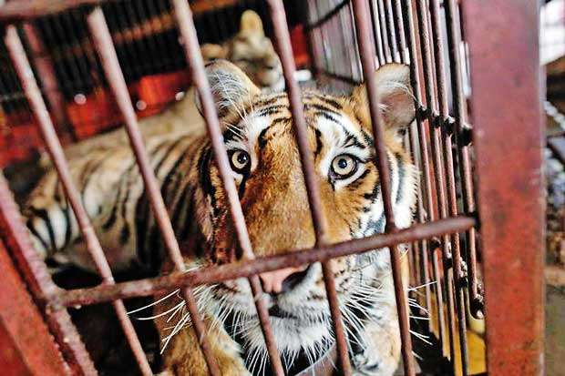

Azil Clifford



Divlje životinje se drže u zatočeništvu u zoo vrtovima, cirkusima, akvarijumima i delfinarijumima ali i
kao kućni ljubimci.
Dobrobit ovih životinja je ozbiljno ugrožena jer im se ne mogu obezbediti prirodni uslovi u kojima mogu
da zadovolje svoje potrebe specifične za vrstu.
Zoo vrtovi pre svega služe zabavi posetilaca i tzv. estetskom doživljaju koji ne mogu imati prioritet
spram patnje životinja i ugrožavanja njihovih interesa.
Tzv. edukativna uloga zoo vrtova se zapravo ne odnosi na "edukaciju" posetilaca i javnosti već naučnika
što je daleko od realne situacije.
Ni tzv. konzervacijska uloga ( očuvanje vrsta) nije održiv argument opstanka savremenih zoo vrtova jer
tu ulogu treba da imaju rezervati.
U zoo vrtovima životinje su zapravo živi eksponati za razgledanje osuđene na život u malim kavezima, bez
mogućnosti da zadovolje svoje potrebe za kretanjem, adekvatnim skloništem, stimulacijom.
Poseban problem je prostorni raspored koji dovodi do toga da se predatori i životinje koje su u prirodi
njihov plen nalaze previše blizu što je dodatni stres.
Narušavanje dobrobiti je posebno vidljivo kroz poremećaje ponašanja tzv. stereotipije, samopovređivanje,
čupanje perja kod ptica itd.
Odlaskom u zoo vrtove zapravo podržavate zatočeništvo i eksploataciju životinja koje su tu ne zato što
je to za njih dobro već da bi vama pružile "zadovoljstvo".
Zbog toga je potrebno da preispitamo naše koncepte ljubavi prema prirodi i prema životinjama koja bi
trebalo da podrazumeva zagovaranje zaštite njihovih interesa.
Cirkusi su poseban vid eksploatacije životinja koji za razliku od zoo vrtova podrazumeva i svakodnevnu
praksu zanemarivanja, zlostavljanja i nasilja prema životinjama.
Šta je cilj? Zabava i profit. Životinje u cirkusima ne izvode svoje tačke zato što su inteligente i zato
što su privržene dreserima već zato što su zlostavljanje.
Dresura podrazumeva upotrebu bičeva, bolnih kuki, struje, bodljikavih ogrlica, batina. Međutim, agonija
za ove životinje je svakodnevna.
Kada nisu na okrutnoj dresuri provode život okovane u malim prljavim kavezima.
Transporti su takođe posebno problematični jer neretko životinje danima ne dobijaju adekvatnu hranu i
vodu. Veterinarska nega i pomoć nisu isplativi.
Kao i cirkusi akvarijumi i delfinarijumi služe sticanju profita obezbeđujući zabavu gledaocima.
Dresura se bazira na izgladnjavanju a bazeni u kojima se drže delfini i orke su veliki izvor stresa zbog
male zapremnine, hlorisane vode i nemogućnosti ovih životinja da zadovolje svoje prirodne
Mali bazeni su posebno opasni za delfine koji komuniciraju pomoću sonara usled čega ove životinje
postaju dezorjentisane i uznemirene. potrebe.
Neretko dolazi do samopovređivanja i samoubistva.